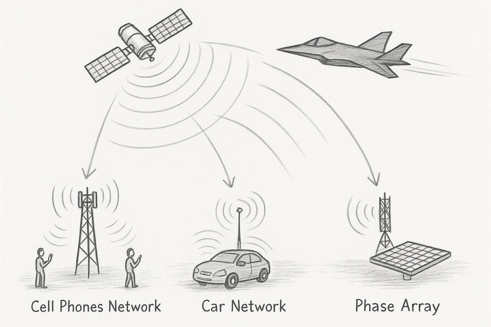

This diagram illustrates the RF shadow formed when a stealth aircraft obstructs a radio signal path between a transmitter and receiver. Traditional radar struggles to detect stealth aircraft due to minimized reflections. However, the shadowed region formed behind the aircraft relative to the transmitter can be observed using passive radar techniques — particularly by analyzing disruptions in analog broadcast signals.
The following diagram shows how satellite transmissions interact with everyday networks — including cell towers, connected vehicles, and phased array ground stations. Each acts as a potential passive radar receiver, detecting RF shadow patterns as stealth aircraft interrupt broadcast signals.
Figure: Integration of satellite, cellular, and vehicular networks for national passive radar coverage.
Developed by BR Engineering | View Résumé (PDF)